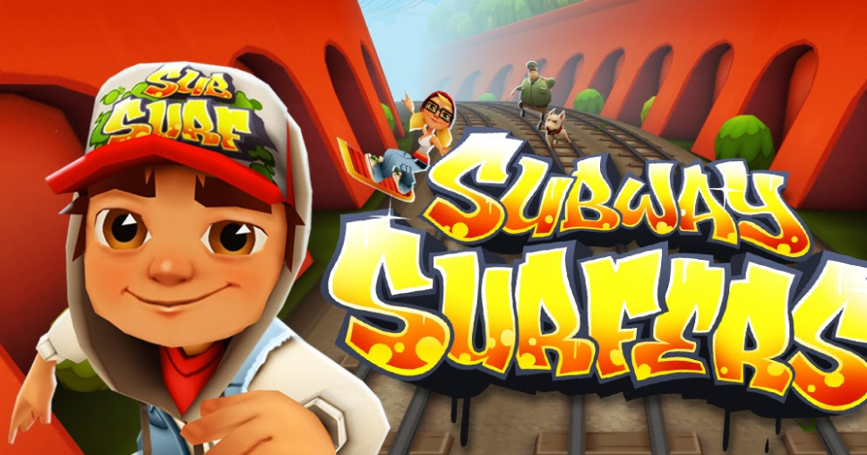
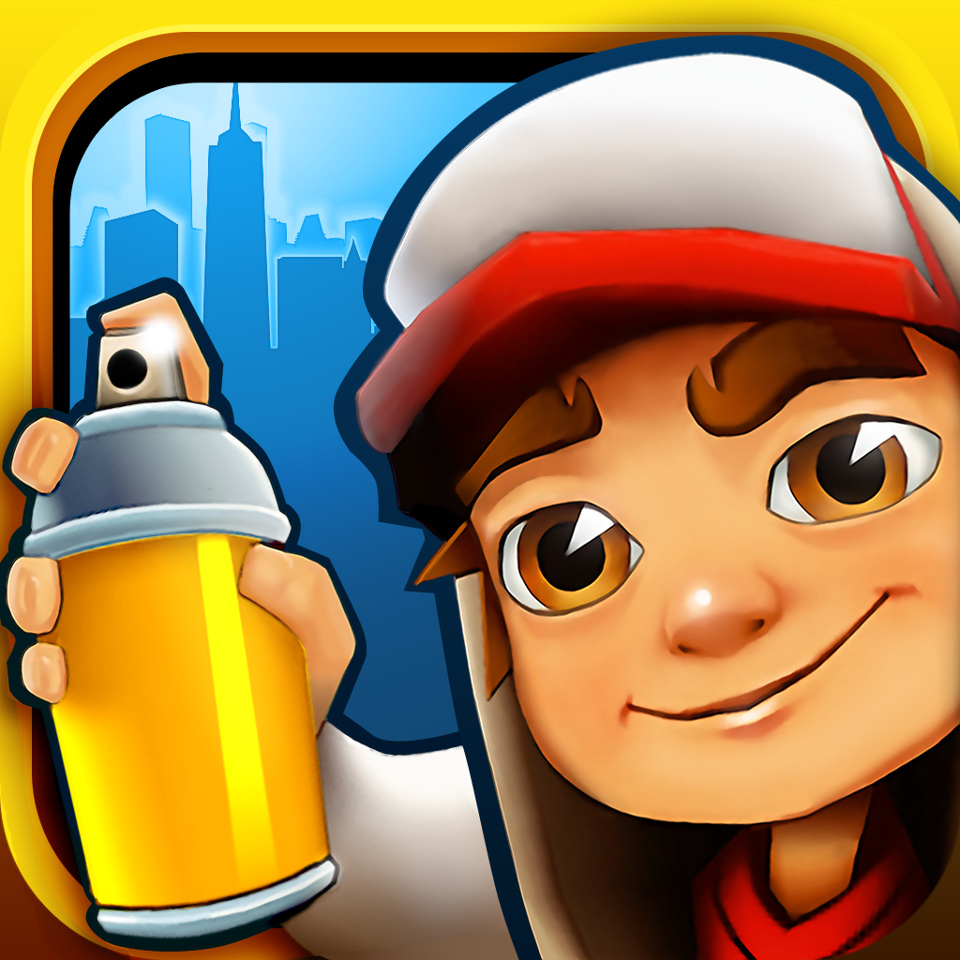

<<<<<<< HEAD

=======
>>>>>>> 073a105595cebbf698abfb0869acdd9a231cd1d1

Subway Surfers


2012.06 출시 | 시즌 1개
Play Now
열차 서핑을 소재로 한 러닝 액션 게임.
그래피티가 취미인 주인공 제이크와 친구들이 열차서핑을 하며 역무원 테드 루츠에게서 도망치는 게임이다.
상세정보 보러가기
그래피티가 취미인 주인공 제이크와 친구들이 열차서핑을 하며 역무원 테드 루츠에게서 도망치는 게임이다.
열차 서핑을 소재로 한 러닝 액션 게임.
그래피티가 취미인 주인공 제이크와 친구들이 열차서핑을 하며 역무원 테드 루츠에게서 도망치는 게임이다.
상세정보 보러가기
그래피티가 취미인 주인공 제이크와 친구들이 열차서핑을 하며 역무원 테드 루츠에게서 도망치는 게임이다.
Review
너의 이름은
★★★★★
오랜만에 하니까 너무 재미있어요!
날씨 아이
★★★★☆
이거 안해본 사람?
불꽃
★★★★★
진짜 꼭 해보세요 추천.
귀멸의 칼날
★★☆☆☆
아직도 이런 게임 하는 사람 있어?